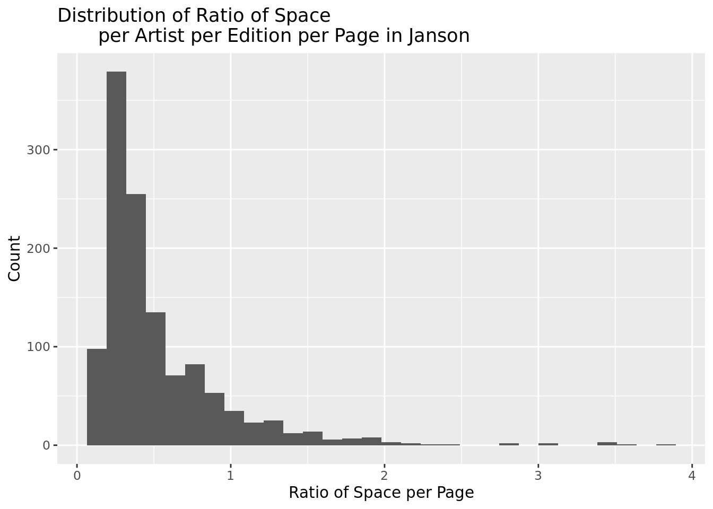
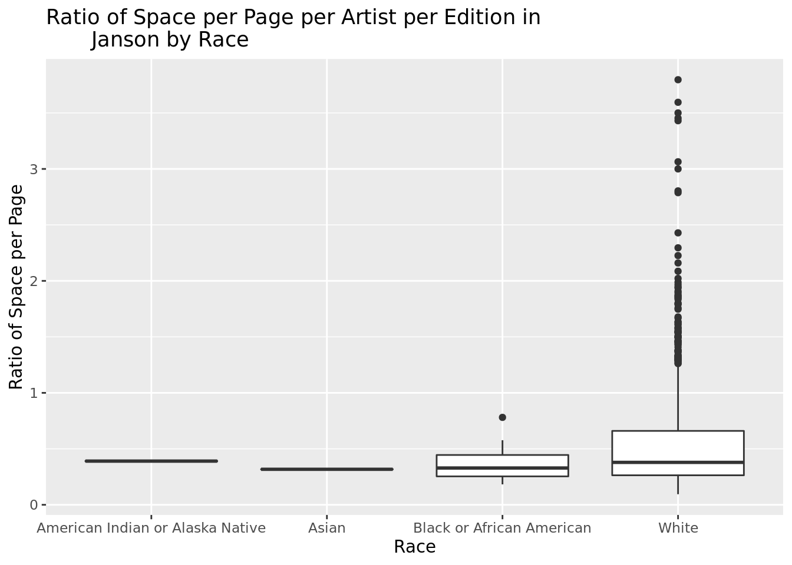
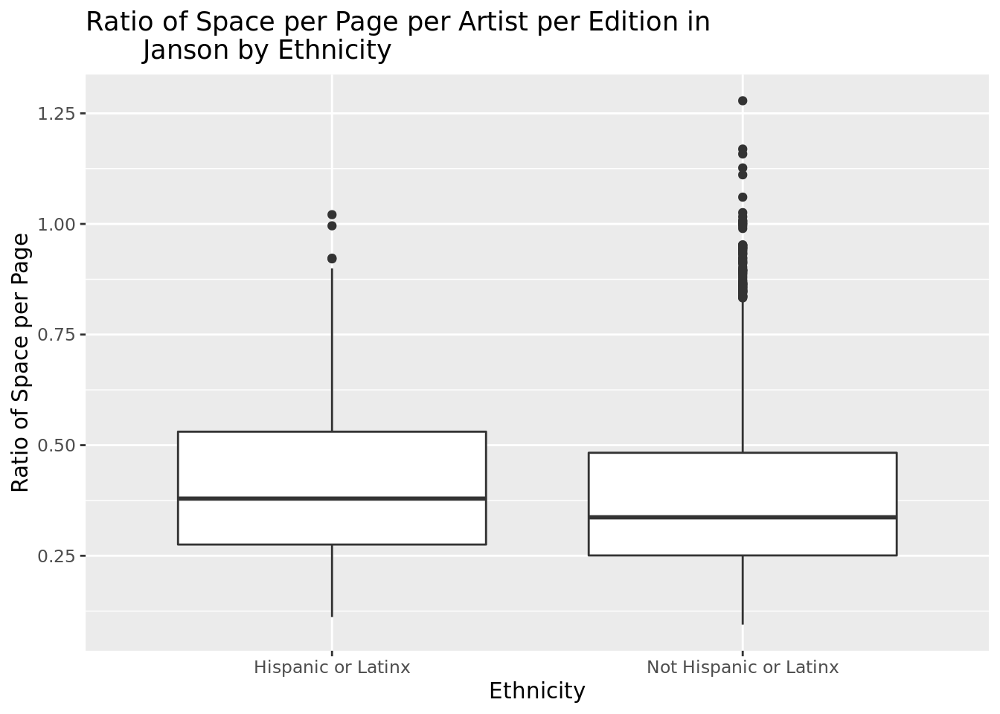
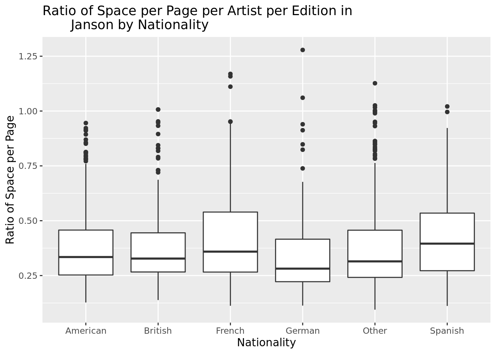
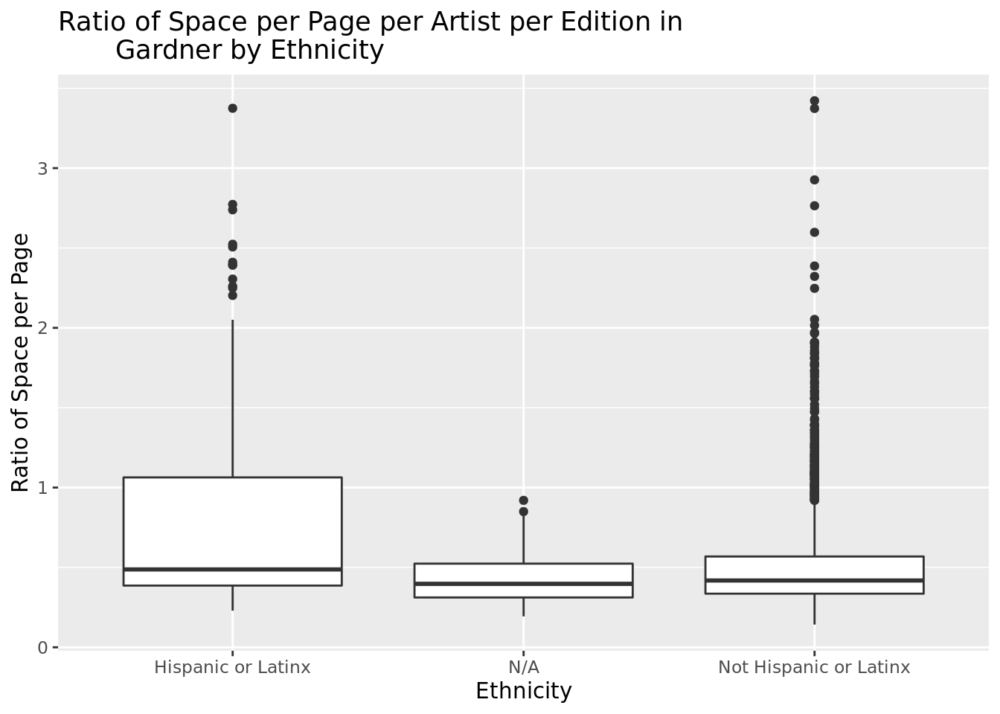

`summarise()` has grouped output by 'ArtistName', 'EditionNumber', 'Year', 'ArtistNationalityOther', 'ArtistGender', 'ArtistRace', 'ArtistEthnicity'. You can override using the `.groups` argument.
`summarise()` has grouped output by 'ArtistName', 'EditionNumber', 'Year', 'ArtistNationalityOther', 'ArtistGender', 'ArtistRace', 'ArtistEthnicity'. You can override using the `.groups` argument.
ggplot(janson, aes(x = SpaceRatioPerPage, fill = EditionNumber))+geom_histogram()+labs(title ="Distribution of Ratio of Space per Artist per Edition per Page in Janson",x ="Ratio of Space per Page",y ="Count")
`stat_bin()` using `bins = 30`. Pick better value with `binwidth`.

summary(janson$SpaceRatioPerPage)
Min. 1st Qu. Median Mean 3rd Qu. Max.
0.0946 0.2635 0.3768 0.5317 0.6516 3.7967
# A tibble: 15 × 8
# Groups: ArtistName, EditionNumber, Year, ArtistNationalityOther,
# ArtistGender, ArtistRace, ArtistEthnicity [15]
ArtistNationalityOther ArtistGender ArtistRace ArtistEthnicity ArtistName
<chr> <chr> <chr> <chr> <chr>
1 Spanish Male White Hispanic or Lati… Pablo Picas…
2 Spanish Male White Hispanic or Lati… Pablo Picas…
3 Spanish Male White Hispanic or Lati… Pablo Picas…
4 Spanish Male White Hispanic or Lati… Pablo Picas…
5 Spanish Male White Hispanic or Lati… Pablo Picas…
6 Spanish Male White Hispanic or Lati… Pablo Picas…
7 Spanish Male White Hispanic or Lati… Pablo Picas…
8 Spanish Male White Hispanic or Lati… Pablo Picas…
9 Spanish Male White Hispanic or Lati… Pablo Picas…
10 French Male White Not Hispanic or … Claude Monet
11 French Male White Not Hispanic or … Eugène Dela…
12 French Male White Not Hispanic or … Eugène Dela…
13 Other Male White Not Hispanic or … Vincent van…
14 French Male White Not Hispanic or … Jean August…
15 French Male White Not Hispanic or … Paul Cézanne
# … with 3 more variables: EditionNumber <dbl>, Year <dbl>,
# SpaceRatioPerPage <dbl>
The visualization above is right skewed, unimodal and assymetrical. Therefore, we would want to look at the median to understand its center and IQR to understand its spread. The median of SpaceRatioPerPage in Janson is 0.377 and the IQR is 0.388. There are potential outliers that are over 2.0, meaning the amount of space, area of text and area of figure in text combined is more than just the area of a single page within the respective book of Janson’s History of Art. It is obvious to observe that Spanish painter, Pablo Picasso dominates space through all editions of Janson.
ggplot(janson, aes(x=ArtistGender, y= SpaceRatioPerPage))+geom_boxplot()+labs(title ="Ratio of Space per Page per Artist per Edition in Janson by Gender",x ="Gender",y ="Ratio of Space per Page")
# A tibble: 10 × 8
# Groups: ArtistName, EditionNumber, Year, ArtistNationalityOther,
# ArtistGender, ArtistRace, ArtistEthnicity [10]
ArtistNationalityOther ArtistRace ArtistEthnicity ArtistName ArtistGender
<chr> <chr> <chr> <chr> <chr>
1 German White Not Hispanic or … Hannah Höch Female
2 German White Not Hispanic or … Hannah Höch Female
3 Other White Not Hispanic or … Angelica Ka… Female
4 Other White Not Hispanic or … Liubov Popo… Female
5 Other White Not Hispanic or … Angelica Ka… Female
6 American White Not Hispanic or … Mary Cassatt Female
7 American White Not Hispanic or … Susan Rothe… Female
8 American White Not Hispanic or … Elizabeth M… Female
9 American White Not Hispanic or … Mary Cassatt Female
10 French White Not Hispanic or … Rosa Bonheur Female
# … with 3 more variables: EditionNumber <dbl>, Year <dbl>,
# SpaceRatioPerPage <dbl>
Interestingly enough, the median SpaceRatioPerPage for female artists is 0.309, not far below the median SpaceRatioPerPage for male artists, 0.392 in Janson’s History of Art. This indicates that even though the number of female artists per edition included is far fewer, 122, the median amount of space given to women is similar to that as the median amount of space given to male artists per edition, 1097. The only female artist that comes close to being larger than 1 for SpaceRatioPerPage is Hannah Hoch, as seen by the table above.
ggplot(janson, aes(x=ArtistRace, y= SpaceRatioPerPage))+geom_boxplot()+labs(title ="Ratio of Space per Page per Artist per Edition in Janson by Race",x ="Race",y ="Ratio of Space per Page")

janson %>%filter(ArtistRace =="American Indian or Alaska Native")%>%select(ArtistName, ArtistGender, ArtistRace, EditionNumber, Year, SpaceRatioPerPage)
# A tibble: 2 × 8
# Groups: ArtistName, EditionNumber, Year, ArtistNationalityOther,
# ArtistGender, ArtistRace, ArtistEthnicity [2]
ArtistNationalityOther ArtistEthnicity ArtistName ArtistGender ArtistRace
<chr> <chr> <chr> <chr> <chr>
1 American Not Hispanic or… Kay Walkin… Female American Ind…
2 American Not Hispanic or… Kay Walkin… Female American Ind…
# … with 3 more variables: EditionNumber <dbl>, Year <dbl>,
# SpaceRatioPerPage <dbl>
# A tibble: 2 × 8
# Groups: ArtistName, EditionNumber, Year, ArtistNationalityOther,
# ArtistGender, ArtistRace, ArtistEthnicity [2]
ArtistNationalityOther ArtistEthnicity ArtistName ArtistGender ArtistRace
<chr> <chr> <chr> <chr> <chr>
1 Other Not Hispanic or La… Ando Hiros… Male Asian
2 Other Not Hispanic or La… Ando Hiros… Male Asian
# … with 3 more variables: EditionNumber <dbl>, Year <dbl>,
# SpaceRatioPerPage <dbl>
# A tibble: 1 × 8
# Groups: ArtistName, EditionNumber, Year, ArtistNationalityOther,
# ArtistGender, ArtistRace, ArtistEthnicity [1]
ArtistNationalityOther ArtistEthnicity ArtistName ArtistGender ArtistRace
<chr> <chr> <chr> <chr> <chr>
1 American Not Hispanic or … William T.… Male Black or Af…
# … with 3 more variables: EditionNumber <dbl>, Year <dbl>,
# SpaceRatioPerPage <dbl>
Regarding race, there is only artist for American Indian or Alaska Native, which is Kay Walkingstick in the 5th and 6th Editions and one artist for Asian, Ando Hiroshige in the 7th and 8th Editions. Additionally, there is only one Black or African American artist who has a SpaceRatioPerPage that is over .75, William T. Williams in the 3rd Edition. There are myriad white artists per work per edition, 1187, and their space trumps that of the space allotted to nonwhite artists.
ggplot(janson, aes(x=ArtistEthnicity, y= SpaceRatioPerPage))+geom_boxplot()+labs(title ="Ratio of Space per Page per Artist per Edition in Janson by Ethnicity",x ="Ethnicity",y ="Ratio of Space per Page")

janson_HL <- janson %>%filter(ArtistEthnicity =="Hispanic or Latinx")median(janson_HL$SpaceRatioPerPage)
[1] 0.488591
janson_NHL <- janson %>%filter(ArtistEthnicity =="Not Hispanic or Latinx")median(janson_NHL$SpaceRatioPerPage)
[1] 0.374853
Interestingly, the median SpaceRatioPerPage for artists who are Hispanic or Latinx, 0.489 is higher than those who are Not Hispanic or Latinx, 0.375. There are 51 observations of artists per edition who are Hispanic and Latinx and there are 1168 observations of artists per edition who are not Hispanic or Latinx. Picasso plays a large role in such, as he is Hispanic or Latinx and is accounting for the outlyingly larger observations for SpaceRatioPerPage.
ggplot(janson, aes(x=ArtistNationalityOther, y= SpaceRatioPerPage))+geom_boxplot()+labs(title ="Ratio of Space per Page per Artist per Edition in Janson by Nationality",x ="Nationality",y ="Ratio of Space per Page")

MLR of Janson with Gender +Race + Nationality + Ethnicity ~ SpaceRatioPerPage
Call:
lm(formula = SpaceRatioPerPage ~ ArtistRace + ArtistEthnicity +
ArtistGender + ArtistNationalityOther, data = janson)
Residuals:
Min 1Q Median 3Q Max
-1.24357 -0.21611 -0.07987 0.13581 2.44164
Coefficients:
Estimate Std. Error t value Pr(>|t|)
(Intercept) 0.3268360 0.2996234 1.091 0.27557
ArtistRaceAsian -0.2136831 0.3992200 -0.535 0.59257
ArtistRaceBlack or African American -0.1501952 0.2928581 -0.513 0.60814
ArtistRaceWhite -0.0681345 0.2828742 -0.241 0.80970
ArtistEthnicityNot Hispanic or Latinx 0.0634828 0.1057870 0.600 0.54855
ArtistGenderMale 0.1131006 0.0396161 2.855 0.00438
ArtistNationalityOtherBritish 0.0068556 0.0414248 0.165 0.86858
ArtistNationalityOtherFrench 0.2887981 0.0319720 9.033 < 2e-16
ArtistNationalityOtherGerman -0.0007151 0.0439768 -0.016 0.98703
ArtistNationalityOtherOther 0.0275986 0.0342270 0.806 0.42021
ArtistNationalityOtherSpanish 0.9832489 0.1275469 7.709 2.64e-14
(Intercept)
ArtistRaceAsian
ArtistRaceBlack or African American
ArtistRaceWhite
ArtistEthnicityNot Hispanic or Latinx
ArtistGenderMale **
ArtistNationalityOtherBritish
ArtistNationalityOtherFrench ***
ArtistNationalityOtherGerman
ArtistNationalityOtherOther
ArtistNationalityOtherSpanish ***
---
Signif. codes: 0 '***' 0.001 '**' 0.01 '*' 0.05 '.' 0.1 ' ' 1
Residual standard error: 0.3964 on 1208 degrees of freedom
Multiple R-squared: 0.1991, Adjusted R-squared: 0.1925
F-statistic: 30.04 on 10 and 1208 DF, p-value: < 2.2e-16
glance(jansonMLR)$r.squared
[1] 0.1991285
Gardner:
ggplot(gardner, aes(x = SpaceRatioPerPage))+geom_histogram()+labs(title ="Distribution of Ratio of Space per Artist per Edition per Page in Gardner",x ="Ratio of Space per Page",y ="Count")
`stat_bin()` using `bins = 30`. Pick better value with `binwidth`.
summary(gardner$SpaceRatioPerPage)
Min. 1st Qu. Median Mean 3rd Qu. Max.
0.1423 0.3371 0.4204 0.5292 0.5760 3.4220
# A tibble: 24 × 8
# Groups: ArtistName, EditionNumber, Year, ArtistNationalityOther,
# ArtistGender, ArtistRace, ArtistEthnicity [24]
ArtistNationalityOther ArtistGender ArtistRace ArtistEthnicity ArtistName
<chr> <chr> <chr> <chr> <chr>
1 French Male White Not Hispanic or … Eugène Dela…
2 Spanish Male White Hispanic or Lati… Pablo Picas…
3 French Male White Not Hispanic or … Eugène Dela…
4 French Male White Not Hispanic or … Jacques-Lou…
5 Spanish Male White Hispanic or Lati… Pablo Picas…
6 French Male White Not Hispanic or … Eugène Dela…
7 Spanish Male White Hispanic or Lati… Pablo Picas…
8 French Male White Not Hispanic or … Eugène Dela…
9 Spanish Male White Hispanic or Lati… Francisco G…
10 Spanish Male White Hispanic or Lati… Pablo Picas…
# … with 14 more rows, and 3 more variables: EditionNumber <dbl>, Year <dbl>,
# SpaceRatioPerPage <dbl>
The visualization above is right skewed, unimodal and assymetrical. Therefore, we would want to look at the median to understand its center and IQR to understand its spread. The median of SpaceRatioPerPage in Gardner is 0.42 and the IQR is 0.239. There are potential outliers that are over 2.0, meaning the amount of space, area of text and area of figure in text combined is more than just the area of a single page within the respective book of Gardner’s Art Through the Ages. It is obvious to observe that Spanish painter, Pablo Picasso dominates space through Gardner’s, similarly as he did in Janson’s History of Art, but he has more company this time around. French painters such as Delacroix and Jacques-Louis David also occupy substantial space, particularly in the 10th edition.
ggplot(gardner, aes(x=ArtistGender, y= SpaceRatioPerPage))+geom_boxplot()+labs(title ="Ratio of Space per Page per Artist per Edition in Gardner by Gender",x ="Gender",y ="Ratio of Space per Page")
# A tibble: 9 × 8
# Groups: ArtistName, EditionNumber, Year, ArtistNationalityOther,
# ArtistGender, ArtistRace, ArtistEthnicity [9]
ArtistNationalityOther ArtistRace ArtistEthnicity ArtistName ArtistGender
<chr> <chr> <chr> <chr> <chr>
1 German White Not Hispanic or … Hannah Höch Female
2 French White Not Hispanic or … Élisabeth Lo… Female
3 American White Not Hispanic or … Cindy Sherman Female
4 Other White Not Hispanic or … Angelica Kau… Female
5 Other White Not Hispanic or … Dorothea Roc… Female
6 German White Not Hispanic or … Gunta Stölzl Female
7 Other White Hispanic or Lati… Frida Kahlo Female
8 American White Not Hispanic or … Georgia O'Ke… Female
9 German White Not Hispanic or … Hannah Höch Female
# … with 3 more variables: EditionNumber <dbl>, Year <dbl>,
# SpaceRatioPerPage <dbl>
The median SpaceRatioPerPage for female artists is 0.309 is below the median for artists whose gender is unknown, 0.4116867, as well as the median for male artists 0.436 in Gardner’s Art Through the Ages. The number of artists whose gender is unknown has the fewest observations, 64, the number of female artists is slightly greater, 214, and the amount of male artists through editions is, 1665. The only female artist that comes close to being larger than 1 for SpaceRatioPerPage is again Hannah Hoch, as seen by the table above. Male artists have a dramatic amount of outlying artists through editions over a SpaceRatioPerPage of 1, 154.
ggplot(gardner, aes(x=ArtistRace, y= SpaceRatioPerPage))+geom_boxplot()+labs(title ="Ratio of Space per Page per Artist per Edition in Gardner by Race",x ="Race",y ="Ratio of Space per Page")+theme(axis.text.x =element_text(angle =45, size =5))+ylim(0, 2.0)
What sticks out like a sore thumb in the visualization above is the significant number of outlying white artists. The only artists that have a SpaceRatioPerPage of 1 or more are white. Though all the medians of race range between .25 and .6,
ggplot(gardner, aes(x=ArtistEthnicity, y= SpaceRatioPerPage))+geom_boxplot()+labs(title ="Ratio of Space per Page per Artist per Edition in Gardner by Ethnicity",x ="Ethnicity",y ="Ratio of Space per Page")

Across all three categories, Hispanic or Latinx, Not Hispanic or Latinx and N/A, the medians remain relatively similar. The tail for Hispanic or Latinx are comparable to the tail for Not Hispanic or Latinx, just simply the number of observations are far fewer.
ggplot(gardner, aes(x=ArtistNationalityOther, y= SpaceRatioPerPage))+geom_boxplot()+labs(title ="Ratio of Space per Page per Artist per Edition in Gardner by Nationality",x ="Nationality",y ="Ratio of Space per Page")
Call:
lm(formula = SpaceRatioPerPage ~ ArtistRace + ArtistEthnicity +
ArtistGender + ArtistNationalityOther, data = gardnerjanson)
Residuals:
Min 1Q Median 3Q Max
-1.13999 -0.17850 -0.05639 0.09960 2.70755
Coefficients:
Estimate Std. Error
(Intercept) 0.358294 0.128735
ArtistRaceAsian -0.104493 0.123862
ArtistRaceBlack or African American -0.054966 0.126027
ArtistRaceN/A -0.187826 0.131320
ArtistRaceNative American 0.026362 0.274142
ArtistRaceNative Hawaiian or Other Pacific Islander -0.096192 0.140555
ArtistRaceWhite -0.032176 0.120576
ArtistEthnicityN/A -0.102174 0.175547
ArtistEthnicityNot Hispanic or Latinx 0.004919 0.046627
ArtistGenderMale 0.099188 0.020848
ArtistGenderN/A 0.258150 0.174600
ArtistNationalityOtherBritish 0.027457 0.023249
ArtistNationalityOtherFrench 0.284196 0.017305
ArtistNationalityOtherGerman 0.000415 0.025125
ArtistNationalityOtherOther 0.035524 0.019437
ArtistNationalityOtherSpanish 0.826162 0.060736
t value Pr(>|t|)
(Intercept) 2.783 0.00541 **
ArtistRaceAsian -0.844 0.39894
ArtistRaceBlack or African American -0.436 0.66276
ArtistRaceN/A -1.430 0.15273
ArtistRaceNative American 0.096 0.92340
ArtistRaceNative Hawaiian or Other Pacific Islander -0.684 0.49379
ArtistRaceWhite -0.267 0.78960
ArtistEthnicityN/A -0.582 0.56059
ArtistEthnicityNot Hispanic or Latinx 0.105 0.91599
ArtistGenderMale 4.758 2.05e-06 ***
ArtistGenderN/A 1.479 0.13937
ArtistNationalityOtherBritish 1.181 0.23770
ArtistNationalityOtherFrench 16.423 < 2e-16 ***
ArtistNationalityOtherGerman 0.017 0.98682
ArtistNationalityOtherOther 1.828 0.06769 .
ArtistNationalityOtherSpanish 13.603 < 2e-16 ***
---
Signif. codes: 0 '***' 0.001 '**' 0.01 '*' 0.05 '.' 0.1 ' ' 1
Residual standard error: 0.3509 on 3146 degrees of freedom
Multiple R-squared: 0.2119, Adjusted R-squared: 0.2082
F-statistic: 56.4 on 15 and 3146 DF, p-value: < 2.2e-16
glance(gardnerjansonMLR)$r.squared
[1] 0.2119241
whitney eda
{r whitneycounttodate} ggplot(whitneygardnerjanson, aes(x = count_to_date))+ geom_histogram()+ labs(title = “Distribution of Whitney Exhibitions per Artist per Edition”, x = “Count to Date”, y = “Count”)
{r whitneyvisual} ggplot(whitneygardnerjanson, aes(x = count_to_date, y = SpaceRatioPerPage))+ geom_point()+ labs(title = “Ratio of Space Per Artist Per Edition by Number of Exhibitions per Artist per Editions in the Whitney”, x = “Count to Date”, y = “Ratio of Space Per Artist Per Edition”)
moma eda
{r momacounttodate} ggplot(momagardnerjanson, aes(x = count_to_date))+ geom_histogram()+ labs(title = “Distribution of MoMA Exhibitions per Artist per Edition”, x = “Count to Date”, y = “Count”)
{r momavisual} ggplot(momagardnerjanson, aes(x = count_to_date, y = SpaceRatioPerPage))+ geom_point()+ labs(title = “Ratio of Space Per Artist Per Edition by Number of Exhibitions per Artist per Editions in the MoMA”, x = “Count to Date”, y = “Ratio of Space Per Artist Per Edition”)